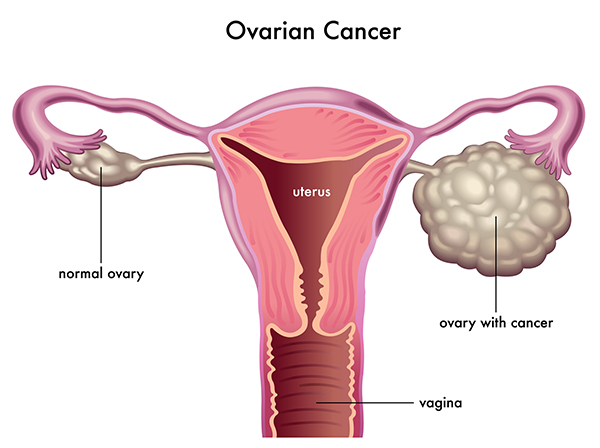
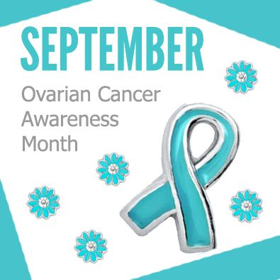
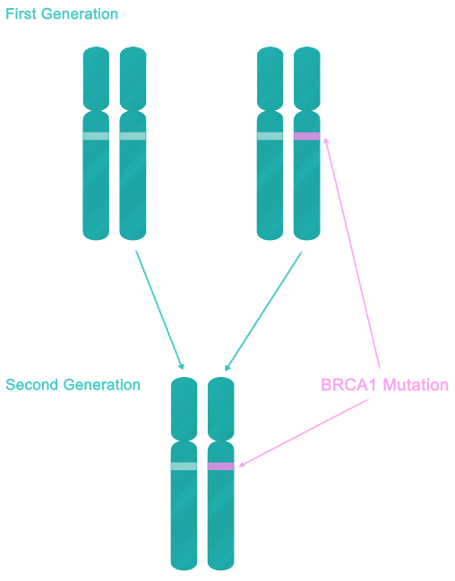
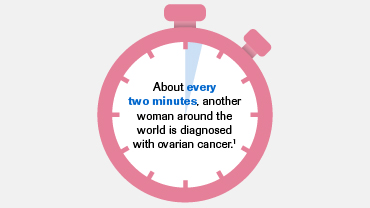
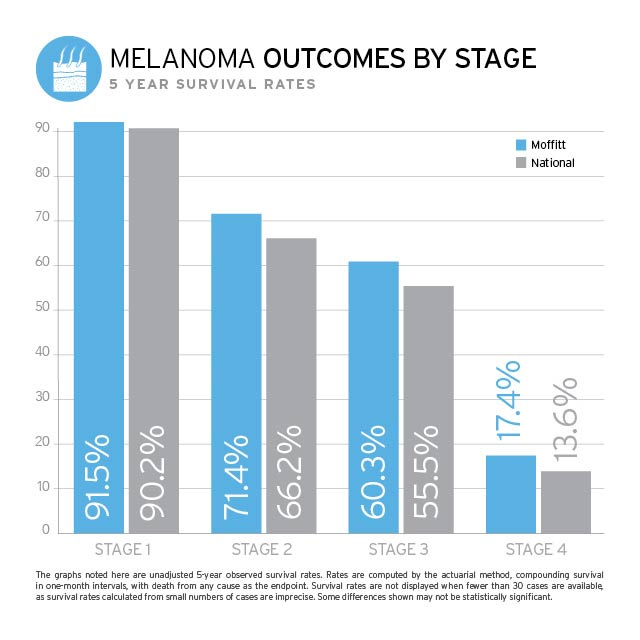
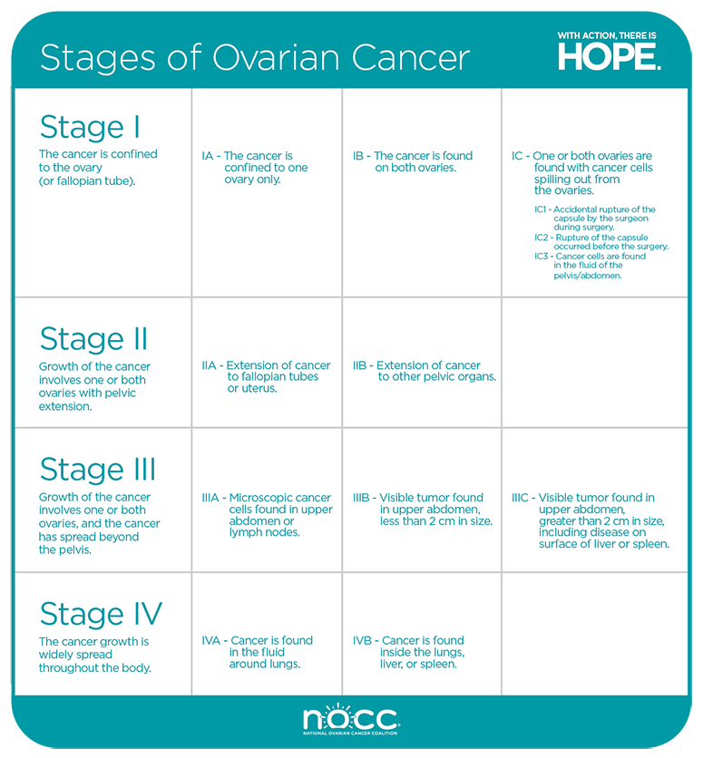

Ovarian cancer has been coined the "silent killer" due to its lack of notable symptoms until the condition is fairly advanced when it can cause painful intercourse, unexplained weight gain, and more. The average lifetime risk of developing this cancer is just 1.6 percent, but since the disease often goes undetected until it reaches the advanced stages, it is the fifth most common cause of cancer-related deaths in women.
Treatments such as surgery and chemotherapy may be used, though their success decreases the more advanced the disease becomes.
Causes
Unfortunately, we cannot pinpoint exactly what causes ovarian cancer, but researchers have identified several known risk factors for its development. While risk factors are important, it's important to keep in mind that ovarian cancers may occur in people who have no risk factors or family history of the disease.
Risk factors include, but are not limited to, advanced age; Caucasian ethnicity; a family history of ovarian, breast, or colon cancer; obesity; and unopposed estrogen replacement therapy.
Factors associated with a lower risk of ovarian cancer include, but are not limited to having a child before the age of 26, breastfeeding, oral contraceptive use, tubal ligation surgery, and hysterectomy.




Survival Rate
Relative survival rates are a more accurate way to estimate the effect of cancer on survival. These rates compare people with cancer to people in the overall population.
if the 5-year relative survival rate for a specific type and stage of cancer is 90%, it means that people who have that cancer are, on average, about 90% as likely as people who don’t have that cancer to live for at least 5 years after being diagnosed.
The numbers below are among the most current available. But to get 5-year survival rates, doctors look at people who were treated at least 5 years ago. As treatments are improving over time, people who are now being diagnosed with ovarian cancer may have a better outlook than these statistics show.
Besides the cancer stage, many other factors can affect a person's outlook.
Survival By Stages


Signs and Symptoms
Change in bowel habits or bladder function
Sores that do not heal
White patches inside the mouth or white spots on the tongue
Preventing Ovarian Cancer
Some risk factors for ovarian cancer, like getting older or having a family history, cannot be changed.
Birth control pills do have some serious risks and side effects such as slightly increasing breast cancer risk.
Women considering taking these drugs for any reason should first discuss the possible risks and benefits with their doctor.